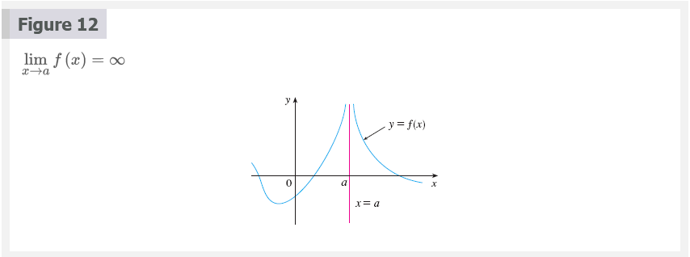

Mark Lucernas
Sep 02, 2020
2.2 The Limit of a Function
Behavior of the function \(f\) defined by \(f(x) = x^{2} - x + 2\) for values of \(x\) near 2.
The following table gives values of \(f(x)\) for values of \(x\) close to 2 but not equal to 2.
| \(x\) | \(f(x)\) |
|---|---|
| 1.0 | 2.000000 |
| 1.5 | 2.750000 |
| 1.8 | 3.440000 |
| 1.9 | 3.710000 |
| 1.95 | 3.852500 |
| 1.99 | 3.970100 |
| 1.995 | 3.985025 |
| 1.999 | 3.997001 |
| 3.0 | 8.000000 |
| 2.5 | 5.750000 |
| 2.2 | 4.640000 |
| 2.1 | 4.310000 |
| 2.05 | 4.152500 |
| 2.01 | 4.030100 |
| 2.005 | 4.015025 |
| 2.001 | 4.003001 |
From the table and the graph of \(f\)(a parabola) shown in Figure 1 we see that the closer \(x\) is to 2 (on either side of 2), the closer \(f(x)\) is to 4. In fact, it appears that we can make the values of \(f(x)\) as close as we like to 4 by taking \(x\) sufficiently close to 2. We express this by saying “the limit of the function \(f(x) = x^{2} - x + 2\) as \(x\) approaches 2 is equal to 4”. The notation for this is
\[ \lim_{x \to 2} (x^{2} - x + 2) = 4 \]

Intuitive Definition of a Limit
Suppose \(f(x)\) is defined when \(x\) is near the number \(a\). (This means that \(f\) is defined on some open interval that contains \(a\), except possibly at \(a\) itself.) then we write
\[ \lim_{x \to a} f(x) = L \]
and say
“the limit of \(f(x)\), as \(x\) approaches \(a\), equals \(L\)”
if we can make the value of \(f(x)\) arbitrarily close to \(L\) (as close to \(L\) as we like) by restricting \(x\) to be sufficiently close to \(a\) (on either side of \(a\)) but not equal to \(a\).

One-Sided Limits
We write
\[ \lim_{x \to a^{-}} f(x) = L \]
and say the left-hand limit of \(f(x)\) as \(x\) approaches \(a\) [or the limit of \(f(x)\) as \(x\) approaches \(a\) from the left] is equal to \(L\) we can make the values of \(f(x)\) arbitrarily close to \(L\) by taking \(x\) to be sufficiently close to \(a\) with \(x\) less less than \(a\).
Similarly, if we require that \(x\) be greater than \(a\) we get “the right-hand limit of \(f(x)\) as \(x\) approaches \(a\) is equal to \(L\)” and we write
\[ \lim_{x \to a^{+}} f(x) = L \]

\[ \lim_{x \to a} = L \text{\;\;if and only if\;\;} \lim_{x \to a^{-}} f(x) = L \text{\;\;and\;\;} \lim_{x \to a^{+}} f(x) = L \]
When a limit doesn’t approach the same value from both sides, we say that the limit doesn’t exist.
- \(\lim_{x \to 2^{-}} g(x) = 3\) and
- \(\lim_{x \to 2^{+}} g(x) = 1\)
- Since the left and right limits are different, we conclude that \(\lim_{x \to 2} g(x)\) does not exist.
- \(\lim_{x \to 5^{-}} g(x) = 2\) and
- \(\lim_{x \to 5^{+}} g(x) = 2\)
- This time the left and right limits are the same and so we have \(\lim_{x \to 5} g(x) = 2\)
Despite this fact, notice that \(g(5) \neq 2\).
Infinite Limits
Let \(f\) be a function defined on both sides of \(a\), except possibly at \(a\)itself. then
\[ \lim_{x \to a} f(x) = \infty \]
means that the values of \(f(x)\) can be made arbitrarily large (as large as we please) by taking \(x\) sufficiently close to \(a\), but not equal to \(a\).

Another notation for \(\lim_{x \to a} f(x) = \infty\) is
\[ f(x) = \infty \;\;\; as \;\;\; x \to a \]
 

The vertical line \(x = a\) is called a vertical asymptote of the curve \(y = f(x)\) if at least one of the following statements is true:
\[ \lim_{x \to a} f(x) = \infty \lim_{x \to a^{-}} f(x) = \infty \;\; \lim_{x \to a^{+}} = \infty \\ \lim_{x \to a} f(x) = -\infty \;\; \lim_{x \to a^{-}} f(x) = -\infty \;\; \lim_{x \to a^{+}} f(x) = -\infty \]
Example 10:
Find the vertical asymptote of \(f(x) = \tan(x)\).
Solution
Because
\[ \tan(x) = \frac{\sin(x)}{\cos(x)} \]
There are potential vertical asymptotes where \(\cos(x) = 0\). In fact, since \(\cos(x) \to 0^{+}\) as \(x \to (\pi/2)^{-}\) and \(\cos(x) \to 0^{-}\) as \(x \to (\pi/2)^{+}\), whereas \(\sin(x)\) is positive (near 1) when \(x\) is near \(\pi/2\), we have
\[ \lim_{x \to (\pi/2)^{-}} \tan(x) = \infty \]
and
\[ \lim_{x \to (\pi/2)^{+}} \tan(x) = -\infty \]

Other Resources:
- üé¨ Estimating limit values from graphs
- üé¨ Unbounded limits
- üé¨ One-sided limits from graphs
- üé¨ One-sided limits from graphs: asymptote
- üé¨ Connecting limits and graphical behavior
- üé¨ Approximating limits using tables
- üé¨ Estimating limits from tables
- üé¨ One-sided limits from tables